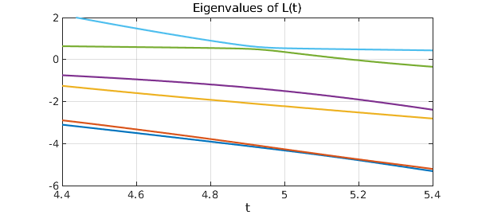

An old Chebfun example displays the effect of level repulsion, also known as avoided crossings, for eigenvalues of symmetric matrices. Here we follow that example in the analogous context of eigenvalues of self-adjoint differential operators.
To do this, we're going to use fourth-order differential operators, not second-order. The reason is that second-order self-adjoint operators put us in the territory of Sturm-Liouville theory, where repeated eigenvalues are impossible. This is analogous to the situation for real symmetric tridiagonal matrices with nonzero subdiagonal entries. To get a genuine possibility of repeated eigenvalues we will use fourth-order operators -- analogous to pentadiagonal matrices.
If $L(t)$ is a real self-adjoint fourth-order linear differential operator depending on a parameter $t$, then for each $t$ there will be infinitely many real eigenvalues. As $t$ varies, the eigenvalues will vary continuously.
It is possible for $L(t)$ to have multiple eigenvalues for some $t$, but generically, this will not happen. That is to say, for "generic" choices of $L(t)$, whatever that means, there will be no values of $t$ for which for which $L(t)$ has a multiple eigenvalue.
Let's illustrate the effect with Chebfun. Our first attempt at this failed (we'll say more in a moment) because it wasn't generic. Here is our second attempt:
L = @(a) chebop(@(x,u) diff(u,4)+a*diff(u,2)+exp(x/20)*u,[-5,5], ...
@(u) [u;diff(u)],@(u) [u;diff(u)]);
We would now like to get our hands on the six functions of $t$ representing the first six (whatever that means) eigenvalues of $L(t)$. In Chebfun, a convenient format for this result will be a quasimatrix with six columns.
We can construct this quasimatrix as follows. (The splitting off command has no effect, since splitting off is the default, but is included to show where one would put splitting on to handle a problem with curves actually crossing or coming very close.)
ek = @(e,k) e(k); % returns kth element of the vector e
eigL = @(t) sort(eigs(L(t))); % returns sorted eigenvalues of the matrix A
d = [4.4 5.4];
E = chebfun; tic
for k = 1:6
E(:,k) = chebfun(@(t) ek(eigL(t),k),d,'splitting','off','eps',1e-4,'vectorize');
end
FS = 'fontsize'; LW = 'linewidth'; MS = 'markersize';
figure, plot(E,LW,1.6), grid on
title('Eigenvalues of L(t)',FS,16);
xlabel('t',FS,12)
ylim([-6 2])

One sees two pairs of curves that nearly cross, but not quite. This brings us to explaining what we did wrong at first. It turns out that if the variable coefficient in the operator is replaced by the constant $1$, this eigenvalue problem is non-generic: its eigenfunctions are even or odd, and eigenvalue crossings occur. By making this coefficient a little bit variable, we have broken that symmetry. Changing 20 to 40 would make the coefficient function closer to constant, and the near-crossing would be even closer.
For a computed example of a similar flavor involving PDEs rather than ODEs, see [1].
Alas, this example takes a while to run:
time_in_seconds = toc
time_in_seconds = 51.163702999999998
Reference
- T. Betcke and L. N. Trefethen, Computations of eigenvalue avoidance in planar domains, Proc. Appl. Math. Mech. 4 (2004), 634-635.